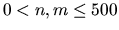
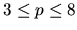

| Metal Cutting |
In order to build a ship to travel to Eindhoven, The Netherlands, various sheet metal parts have to be cut from rectangular pieces of sheet metal. Each part is a convex polygon with at most 8 vertices. Each rectangular piece of sheet metal has width n and height m, so that the four corners of the sheet can be specified by the Cartesian coordinates (0, 0), (0, m), (n, m) and (n, 0) in clockwise order. The cutting machine available can make only straight-line cuts completely through the metal. That is, it cannot cut halfway through the sheet, turn, and then cut some more. You are asked to write a program to determine the minimum total length of cuts this machine has to make in order to cut out the polygon. The cuts must be along the edges of the poligon.
For example, if
n = m = 100, and the polygon has vertices
(80, 80), (70, 30), (20, 20) and (20, 80),
the following diagram shows the optimal cut (the thick lines).
The numbers show the order in which the cuts are made.
The first line of each dataset contains the two integers n and m where . The next line contains p, the number of vertices in the polygon, where . Each of the next p lines contains two integers x and y where 0 < x < n and 0 < y < m, specifying the vertices of the polygon. The vertices are listed in clockwise order. You may assume that the polygon does not intersect itself, and that no three consecutive vertices are colinear.
1 100 100 4 80 80 70 30 20 20 20 80
Minimum total length = 312.575